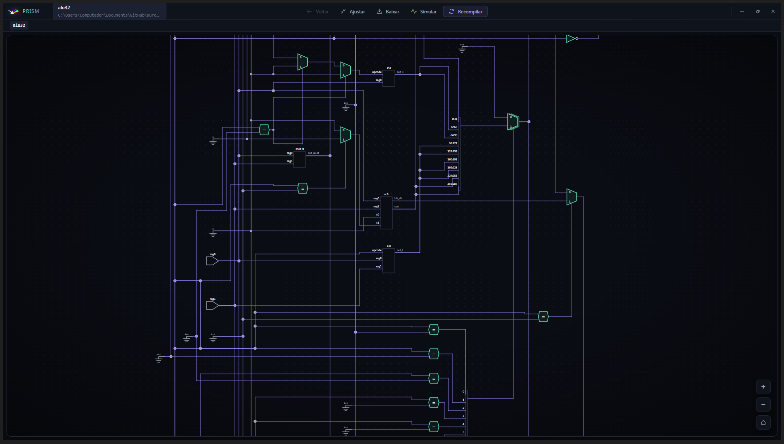
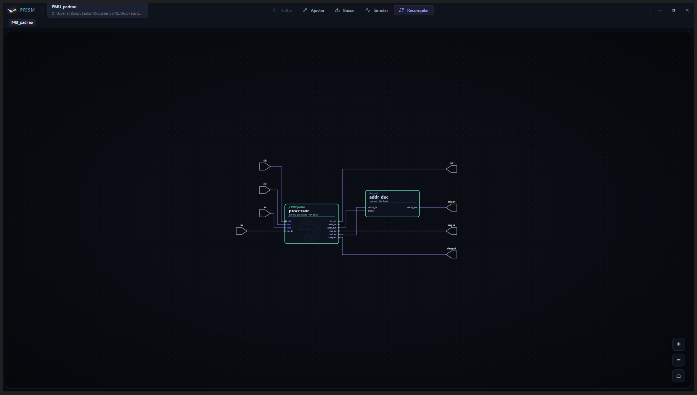
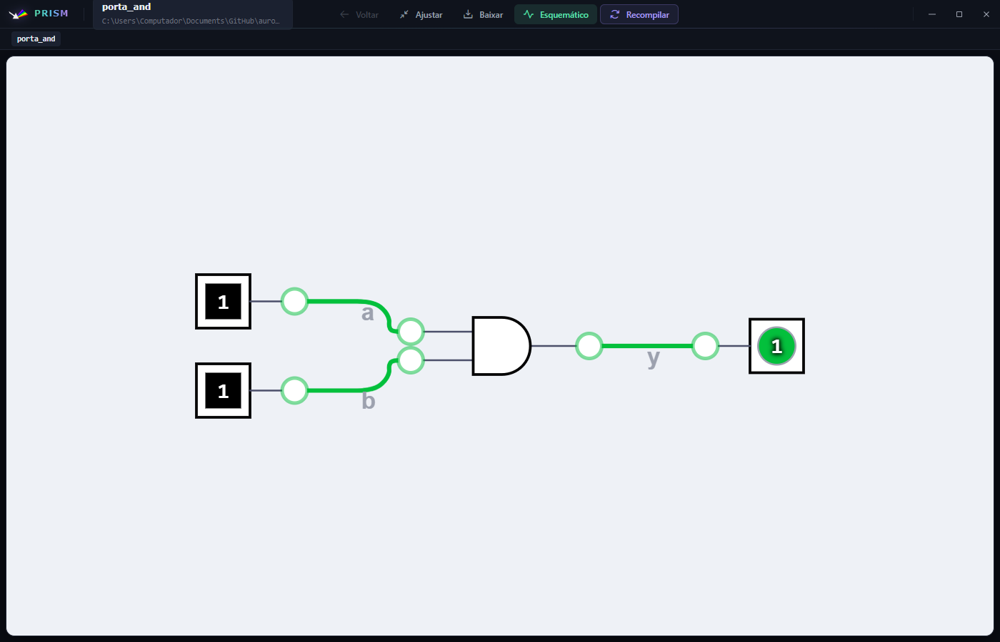

Visualizar e simular o RTL no PRISM¶
O PRISM (Processor Rendering Interface for Schematic Models) desenha o projeto como um diagrama de circuito navegável, com módulos, portas e conexões, do top-level até o interior do processador. É a resposta visual à pergunta sobre que hardware o seu código virou.
Ele tem dois modos complementares. O modo Esquemático apresenta a estrutura RTL sintetizada; o modo Simular abre um circuito lógico interativo no qual entradas podem ser alteradas entre 0 e 1, com as saídas atualizadas na tela.
O que acontece quando você clica¶
Vale conhecer a cadeia, porque ela explica tanto o tempo de espera quanto as exigências.
flowchart LR
A["Fontes do projeto<br><small>moldes SAPHO + Hardware</small>"] --> B["Verificação de<br>sintaxe"]
B --> C["Síntese com Yosys<br><small>modo diagrama</small>"]
C --> D["netlistsvg<br><small>desenho vetorial</small>"]
D --> E["Janela do PRISM"]
C --> F["Visão Hierarquia<br>da árvore"]
A síntese roda em modo diagrama, sem mapeamento tecnológico, justamente para que o desenho preserve a estrutura RTL do código em vez de mostrar portas lógicas genéricas de uma biblioteca de células. Cada módulo é materializado como desenho vetorial antes de a janela abrir, o que torna a navegação instantânea depois.
A saída do Yosys corre no terminal TVERI, e a mesma síntese alimenta a visão Hierarquia da árvore de arquivos.
Dica
Símbolos próprios Os blocos do processador SAPHO não são retângulos genéricos: a unidade lógica e aritmética, as memórias, as pilhas e o contador de programa têm símbolos desenhados sob medida, os mesmos reproduzidos em O processador SAPHO por dentro. Reconhecê-los acelera muito a leitura de um projeto grande.
Abrir o PRISM¶
Adicione todas as fontes sintetizáveis ao projeto.
Defina o top-level pelo menu de contexto da árvore.
Salve os arquivos.
Execute Sintetizar Verilog e corrija os erros mostrados no terminal.
Clique em Abrir PRISM.
O diagrama corresponde ao RTL salvo e processado naquele momento. Se o top-level ou o conjunto de fontes mudar, confirme as seleções na janela principal e use Recompile.
Projeto Verilog puro¶
{kind=link}

Figura 27 O projeto ALU32 mostra operações, multiplexadores, portas e conexões derivados diretamente do módulo alu32.v.¶
No modo Esquemático, use o zoom para aproximar ou afastar, arraste a área livre para navegar e abra instâncias navegáveis para inspecionar módulos internos. Voltar retorna ao nível anterior e Ajustar enquadra o diagrama na janela.
Processador SAPHO¶
{kind=link}

Figura 28 No projeto proj_PMU_padrao, o processador SAPHO aparece com um ícone próprio no RTL, ao lado dos demais blocos e conexões do Top Level.¶
A aparência própria do bloco processor facilita reconhecer o núcleo SAPHO dentro de um projeto maior. O ícone representa uma instância do módulo; abra a instância quando quiser navegar pela estrutura interna disponível.
Simulação interativa¶
{kind=link}

Figura 29 Na simulação do projeto porta_AND, as entradas a e b estão em 1; a saída y responde com 1 conforme a tabela-verdade da porta AND.¶
Para testar um circuito combinacional:
Abra o esquemático do Top Level no PRISM.
Clique em Simular e aguarde a construção do circuito interativo.
Clique nos controles de entrada para alternar cada valor entre
0e1.Observe as conexões e os valores das saídas atualizados na própria tela.
Clique em Esquemático para retornar à estrutura RTL.
Em circuitos sequenciais, a simulação pode disponibilizar controles adicionais de clock. Valores desconhecidos podem aparecer como x até que entradas, clock ou reset definam um estado válido.
O modo interativo é apoiado no DigitalJS e limitado a três mil células. Acima disso o PRISM recusa e sugere a visão esquemática comum: é uma lupa didática para circuitos pequenos, não um simulador de propósito geral.
O que o PRISM confirma¶
Use o modo Esquemático para conferir hierarquia, instâncias e conexões. Use Simular para experimentar estados lógicos diretamente, sobretudo em circuitos pequenos e combinacionais.
A simulação interativa não substitui um testbench Verilog ou cocotb, nem a análise temporal em formas de onda. Para verificar sequências extensas, temporização, clock e asserções automatizadas, use Simular com Icarus, Verilator ou cocotb e Formas de onda: GTKWave e Surfer.
Dica
Use o PRISM cedo e com frequência Compilar um processador e abrir o diagrama depois de cada mudança torna palpável a relação entre as construções da linguagem e o custo em hardware. Acrescente uma divisão ao programa e veja o divisor aparecer no desenho; remova-a e ele some.
É a forma mais rápida de internalizar o princípio de pagar apenas pelo que se usa, detalhado em Recursos avançados.
Quando o PRISM falhar¶
- Top Level incorreto
Escolha o módulo raiz do projeto.
- Módulo ausente
Inclua o arquivo que declara a dependência.
- Módulo duplicado
Remova uma das fontes que declaram o mesmo nome.
- Diagrama não é gerado
Execute Compilar Verilog primeiro e corrija o erro mais inicial do terminal.
- Uma instância não abre
Ela pode ser uma primitiva, um módulo filtrado ou não possuir informação suficiente para navegação.
- A simulação mostra
x Defina as entradas e aplique reset ou clock quando o circuito exigir estado inicial.